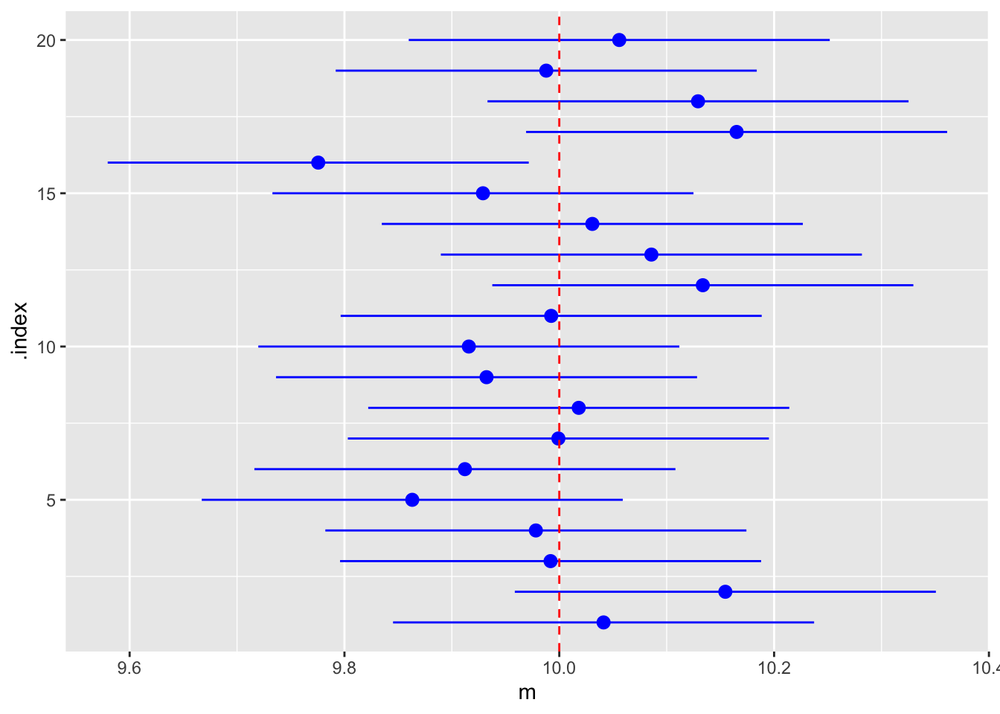

library(mosaic)
library(tidyverse)
set.seed(2000)5 推測統計
推測統計学においては, 母集団を確率変数と考えて, 標本を独立同一分布にしたがう確率変数の実現値と考える. 独立同一分布にしたがう確率変数である標本の関数を統計量という.
推測統計学は, 統計量から母集団について何らかの判断をする. 母集団の特徴づけるものを母数という. 母数についての値を標本から得ることを推定といい, 推定のための統計量を推定量という. 母数についての仮説を標本から得ることを検定といい, 検定のための統計量を検定統計量という.
5.1 推定
5.1.1 点推定
推定量には点推定と区間推定にわかれる. 推定量は確率変数であり, その期待値が母数と同じ場合, 不偏という.
標本サイズを \(n\) とし, 確率変数 \(X_{i}\) の平均値 \(\mu\) と分散 \(\sigma^{2}\) が同じ正規分布にしたがい, 互いに無相関とする. 正規分布なので互いに独立である. 標本平均の期待値は \(\mu\) なので不偏推定量である.
推定量が標本サイズがおおきくなるについれ分散が小さくなるならば, 確率変数にあるある値に収束する このとき一致といいう.
先の標本平均の分散は \(\sigma^2/n\) であるので, 一致推定量である. これは大数の法則より明らかである. 標本分散についても一致推定量であることが知られている.
また中心極限値定理はの標本平均の標準化が分布関数に収束していくことであった. このように推定量が正規分布に収束する場合, 漸近正規であるという.
5.1.2 区間推定
推定量の分布がわかっているならば, ある確率のもと母数が含まれる区間に求めることができる. その確率を 信頼係数 (confidence coefficient) といい, その区間を 信頼区間 (confidence interval) といい, その方法を 区間推定 (interval estimation) という.
確率変数 \(X_{i}\) の平均値 \(\mu\) と分散 \(\sigma^{2}\) が同じ正規分布にしたがい, 互いに無相関とする. 正規分布なので互いに独立である. いま \(\sigma^{2}\) が既知とする. このとき \[ Z=\frac{\bar{X}-\mu}{SE[\bar{X}]}=\frac{\bar{X}-\mu}{\sigma/\sqrt{n}}=\frac{\sqrt{n}(\bar{X}-\mu)}{\sigma}\sim N(0,1) \] である. したがって Z が標準正規分布の両側 100\(\alpha\)%点 \(z(\alpha)\) で定まる区間 \([-z(\alpha),\;z(\alpha)]\) に含まれる確率は \[ P\left(\left|\frac{\sqrt{n}(\bar{X}-\mu)}{\sigma}\right|\leq z(\alpha)\right)=1-\alpha=\gamma \] である. よって, \(\mu\) について解いた表現にすると \[ P\left(\bar{X}-z(\alpha)\frac{\sigma}{\sqrt{n}}\leq\mu\leq\bar{X}+z(\alpha)\frac{\sigma}{\sqrt{n}}\right)=1-\alpha=\gamma \] となる. 信頼区間は \[ \left[\bar{X}-z(\alpha)\frac{\sigma}{\sqrt{n}},\;\bar{X}+z(\alpha)\frac{\sigma}{\sqrt{n}}\right] \] となり, 信頼係数は \(\gamma=1-\alpha\) である. 信頼係数を大きく取ると, 区間幅は大きくなり, また \(n\) が大きいと区間幅は小さくなる.
このことを R で確かめる.平均10, 分散1で確かめる. まずは20個のシミュレーションを実施し, 信頼区間の上限と下限を計算する.
set.seed(1234)
simulation <- do(20) * {
size <- 100
sd <- 1
x <- rnorm(size, mean = 10, sd = sd)
m <- mean(x)
ml <- m - 1.96 * sd / sqrt(size)
mu <- m + 1.96 * sd / sqrt(size)
data.frame(m, ml, mu)
}
head(simulation)これを図示すると以下になる.
gf_pointrange(.index ~ m + mu + ml, data = simulation, color = "blue") |>
gf_vline(xintercept = 10, col = "red", linetype = 2)
この例では20回中1回だけ正しく区間推定されていないことをしめしている. もちろん乱数によっては0回や2回の場合もありうる. ただ10万回実施するなら, ほぼ1万回誤って推定されることになる.
5.2 カテゴリカル・データの検定
以下のデータを考える.
df <- select(HELPrct, sex, homeless, substance)
summary(df)
#> sex homeless substance
#> female:107 homeless:209 alcohol:177
#> male :346 housed :244 cocaine:152
#> heroin :1245.2.1 prop.test
\(X_i\) が確率 \(p\) で1, 確率 \(1-p\) で0となるベルヌーイ分布にしたがうとき, 標本平均 \(\bar{x}\) は大数の法則より, 十分大きな \(N\) のもとで \(p\) に確率的に収束し, 中心極限値定理により, \[ \frac{\sqrt{N}(\bar{x}-p)}{\sqrt{\bar{x}(1-\bar{x})}}\stackrel{a}{\sim} Normal(0,1) \] と正規分布に近似できる. これを用いて検定を実施する.
sex について女性が3割であることを帰無仮説として検定すると以下の手順をとればよい.
prop.test(~sex, data = df, p = 0.3)
#>
#> 1-sample proportions test with continuity correction
#>
#> data: df$sex [with success = female]
#> X-squared = 8.4785, df = 1, p-value = 0.003594
#> alternative hypothesis: true p is not equal to 0.3
#> 95 percent confidence interval:
#> 0.198377 0.278590
#> sample estimates:
#> p
#> 0.2362031上の結果では帰無仮説は棄却している.
同様にホームレスになる確率が50%を帰無仮説とした仮説検定は以下である.
prop.test(~homeless, data = df)
#>
#> 1-sample proportions test with continuity correction
#>
#> data: df$homeless [with success = homeless]
#> X-squared = 2.5519, df = 1, p-value = 0.1102
#> alternative hypothesis: true p is not equal to 0.5
#> 95 percent confidence interval:
#> 0.4148932 0.5085093
#> sample estimates:
#> p
#> 0.4613687帰無仮説が正しいときに自由度のカイ二乗分布にしたがう. 上の結果では帰無仮説は棄却している.
男性がホームレスになる確率と女性がホームレスになる確率が同じという帰無仮説としたときの検定は以下を実施すればよい.
prop.test(~homeless | sex, data = df)
#>
#> 2-sample test for equality of proportions with continuity correction
#>
#> data: tally(homeless ~ sex)
#> X-squared = 3.8708, df = 1, p-value = 0.04913
#> alternative hypothesis: two.sided
#> 95 percent confidence interval:
#> -0.226451636 -0.002763425
#> sample estimates:
#> prop 1 prop 2
#> 0.3738318 0.4884393帰無仮説が正しいときに自由度のカイ二乗分布にしたがう. 上の結果は帰無仮説をギリギリ棄却している.
5.2.2 binom.test
なお, より正確な検定として二項検定というものがあり, R で実行可能である.
binom.test(~homeless, data = df)
#>
#>
#>
#> data: df$homeless [with success = homeless]
#> number of successes = 209, number of trials = 453, p-value = 0.1101
#> alternative hypothesis: true probability of success is not equal to 0.5
#> 95 percent confidence interval:
#> 0.4147418 0.5085030
#> sample estimates:
#> probability of success
#> 0.46136875.2.3 xchisq.test
カテゴリーが3以上ならカイ二乗検定を実施すればよい. ライブラリ mosaic では標準のカイ二乗検定 chisq.test を拡張した xchisq.test が利用できる.
一変数の場合を考えよう. 例えば
tab1 <- tally(~substance, data = df)
tab1
#> substance
#> alcohol cocaine heroin
#> 177 152 124というデータがある. この比率が同じなのか, たまたまななのか検定することができる.
xchisq.test(tab1, p = c(1/3, 1/3, 1/3))
#>
#> Chi-squared test for given probabilities
#>
#> data: x
#> X-squared = 9.3113, df = 2, p-value = 0.009508
#>
#> 177 152 124
#> (151.00) (151.00) (151.00)
#> [4.4768] [0.0066] [4.8278]
#> < 2.116> < 0.081> <-2.197>
#>
#> key:
#> observed
#> (expected)
#> [contribution to X-squared]
#> <Pearson residual>なお p についての指定がない場合, 等確率を帰無仮説とする.
5.2.4 独立性の検定
二変数のデータを考えよう.
tab2 <- tally(~sex | substance, data = df)
tab2
#> substance
#> sex alcohol cocaine heroin
#> female 36 41 30
#> male 141 111 94この二変数データが独立のとき, 同時確率がそれぞれの周辺確率の積になる. 同時確率の推定値は以下で実施できる.
tally(~sex | substance, data = df, format = 'percent') / 100
#> substance
#> sex alcohol cocaine heroin
#> female 0.2033898 0.2697368 0.2419355
#> male 0.7966102 0.7302632 0.7580645周辺確率の推定値およびそれらの積は以下で実施できる.
(x <- tally(~sex, data = df, format = 'percent') / 100)
#> sex
#> female male
#> 0.2362031 0.7637969
(y <- tally(~substance, data = df, format = 'percent') / 100)
#> substance
#> alcohol cocaine heroin
#> 0.3907285 0.3355408 0.2737307
outer(x, y)
#> substance
#> sex alcohol cocaine heroin
#> female 0.09229127 0.07925578 0.06465603
#> male 0.29843720 0.25628506 0.20907465独立であるかどうかの仮説検定もおなじ xchisq.test で実行可能である.
xchisq.test(tab2)
#>
#> Pearson's Chi-squared test
#>
#> data: x
#> X-squared = 2.0264, df = 2, p-value = 0.3631
#>
#> 36 41 30
#> ( 41.81) ( 35.90) ( 29.29)
#> [0.8068] [0.7236] [0.0173]
#> <-0.898> < 0.851> < 0.131>
#>
#> 141 111 94
#> (135.19) (116.10) ( 94.71)
#> [0.2495] [0.2238] [0.0053]
#> < 0.500> <-0.473> <-0.073>
#>
#> key:
#> observed
#> (expected)
#> [contribution to X-squared]
#> <Pearson residual>この場合, 帰無仮説を強く棄却している.
なお, 独立の検定としてより正確な検定方法としてフィッシャー検定というものがあり, R で実行可能である.
fisher.test(tab2)
#>
#> Fisher's Exact Test for Count Data
#>
#> data: tab2
#> p-value = 0.3597
#> alternative hypothesis: two.sided5.3 数量データの検定
次の数量データを考える.
df <- select(HELPrct, cesd, pcs, homeless, substance)
inspect(df)
#>
#> categorical variables:
#> name class levels n missing
#> 1 homeless factor 2 453 0
#> 2 substance factor 3 453 0
#> distribution
#> 1 housed (53.9%), homeless (46.1%)
#> 2 alcohol (39.1%), cocaine (33.6%) ...
#>
#> quantitative variables:
#> name class min Q1 median Q3 max mean sd
#> 1 cesd integer 1.00000 25.00000 34.00000 41.00000 60.00000 32.84768 12.51446
#> 2 pcs numeric 14.07429 40.38438 48.87681 56.95329 74.80633 48.04854 10.78460
#> n missing
#> 1 453 0
#> 2 453 05.3.1 ティー検定
標本平均 \(\bar{x}\) がある値 \(\mu_0\) かどうかという帰無仮説は 変数が正規分布に従っているならば, ティー検定が実行できる 標本サイズを \(N\), 不偏標本分散を \(s^2\) とする. このとき検定統計量 \[ \frac{\sqrt{N}(\bar{x}-\mu_0)}{s} \] は自由度 \(N-1\) のティー分布にしたがうことが知られている.
ある平均をとることが帰無仮説になる仮説検定は t.test で実行できる.
t.test(~cesd, mu = 30, data = df)
#>
#> One Sample t-test
#>
#> data: cesd
#> t = 4.8432, df = 452, p-value = 1.758e-06
#> alternative hypothesis: true mean is not equal to 30
#> 95 percent confidence interval:
#> 31.69217 34.00320
#> sample estimates:
#> mean of x
#> 32.84768この場合, 帰無仮説は棄却している. mu=30 がない場合, mu=0 という帰無仮説になる.
十分に自由度 (約30以上) があれば正規分布に近似することができる.
5.3.2 平均の差の検定
サイズが \(N_1\) と \(N_2\) の2つの変数について, 両方の変数が正規分布に従っていて分散が等しいなら, それぞれの変数の平均が同じかどうか正確にティー検定を実行できる. それぞれの標本平均を \(\hat{\mu}_1\), \(\hat{\mu}_2\) として, 2つの変数の共通の標本分散を \(s\) とすると, 検定統計量 \[ \frac{\hat{\mu}_1-\hat{\mu}_2}{s\sqrt{\frac{1}{N_1}+\frac{1}{N_2}}} \] が自由度 \(N_1+N_2-2\) のティー分布にしたがうことが知られている.
R での計算実行例は以下である.
t.test(~cesd | homeless, data = df, var.equal = TRUE)
#>
#> Two Sample t-test
#>
#> data: cesd by homeless
#> t = 1.8565, df = 451, p-value = 0.06404
#> alternative hypothesis: true difference in means between group homeless and group housed is not equal to 0
#> 95 percent confidence interval:
#> -0.1279655 4.4954845
#> sample estimates:
#> mean in group homeless mean in group housed
#> 34.02392 31.84016帰無仮説は棄却できない.
分散が等しくなくても十分な自由度のもと平均の差の検定が実行できる. 検定統計量 \[ \frac{\hat{\mu}_1-\hat{\mu}_2}{\sqrt{\frac{s_1^2}{N_1}+\frac{s_2^2}{N_2}}} \] は十分な自由度のもと標準正規分布に近似できることが知られている. これはウェルチの検定とも呼ばれている.
R での計算実行例は以下である.
t.test(~cesd | homeless, data = df)
#>
#> Welch Two Sample t-test
#>
#> data: cesd by homeless
#> t = 1.8599, df = 443.36, p-value = 0.06356
#> alternative hypothesis: true difference in means between group homeless and group housed is not equal to 0
#> 95 percent confidence interval:
#> -0.1237566 4.4912756
#> sample estimates:
#> mean in group homeless mean in group housed
#> 34.02392 31.84016この場合でも帰無仮説は棄却できない. 分散が等しいという積極的な理由がなければ, こちらを利用したほうがよい.
5.3.3 等分散の検定
サイズが \(N_1\) と \(N_2\) の2つの変数について, 両方の変数が正規分布に従っているならば, どちらの分散の同じかどうかの等分散の検定が実行できる. それぞれの分散を \(s_1^2\) と \(s_2^2\) として, 検定統計量を \[ \frac{s_1^2}{s_2^2} \] とする. ただし分子のほうが分散が大きいとする. 帰無仮説が正しいならば自由度が \(N_1-1\) と \(N_2-1\) のエフ分布になることが知られている.
R での計算実行例は以下である.
cesd_housed <- df |> filter(homeless == "housed") |> pull(cesd)
cesd_homeless <- df |> filter(homeless == "homeless") |> pull(cesd)
var.test(cesd_housed, cesd_homeless)
#>
#> F test to compare two variances
#>
#> data: cesd_housed and cesd_homeless
#> F = 1.0495, num df = 243, denom df = 208, p-value = 0.7209
#> alternative hypothesis: true ratio of variances is not equal to 1
#> 95 percent confidence interval:
#> 0.8060752 1.3626323
#> sample estimates:
#> ratio of variances
#> 1.049458帰無仮説は棄却できないので, 等分散のもとでの検定が正当化される.
5.3.4 無相関の検定
サイズ \(N\) が同じの2つの変数について, 両方の変数が正規分布に従っているならば, 相関係数がゼロであるという帰無仮説とする無相関の検定が実行できる. 標本相関係数を \(r\) として, 検定統計量を \[ \frac{r\sqrt{N-2}}{\sqrt{1-r^2}} \] とする. 帰無仮説が正しいならば自由度が \(N-2\) のティー分布になることが知られている.
R での計算実行例は以下である.
cor.test(pcs ~ cesd, data = df)
#>
#> Pearson's product-moment correlation
#>
#> data: pcs and cesd
#> t = -6.5007, df = 451, p-value = 2.123e-10
#> alternative hypothesis: true correlation is not equal to 0
#> 95 percent confidence interval:
#> -0.3747266 -0.2061273
#> sample estimates:
#> cor
#> -0.2927002